전기공사기사 (2017-09-23 기출문제)
1과목: 전기응용 및 공사재료
1. 전기철도에서 전식 방지법이 아닌 것은?
- 변전소 간격을 짧게 한다.
- 대지에 대한 레일의 절연저항을 크게 한다.
- 귀선의 극성을 정기적으로 바꿔주어야 한다.
- 귀선 저항을 크게하기 위해 레일에 본드를 시설한다.
(정답률: 63%)

2. 자기방전량만을 항시 충전하는 부동충전방식의 일종인 충전방식은?
- 세류충전
- 보통충전
- 급속충전
- 균등충전
(정답률: 81%)
3. 경사각, 미끄럼 마찰계수 μ의 경사면위에서 중량 M(kg)의 물체를 경사면과 평행하게 속도ｖ(m/s)로 끌어올리는 데 필요한 힘 는?
- F=9.8M(sinθ+μscosθ)
- F=9.8M(cosθ+μssinθ)
- F=9.8Mv(sinθ+μscosθ)
- F=9.8Mv(cosθ+μssinθ)
(정답률: 59%)
4. 엘리베이터에 사용되는 전동기의 특성이 아닌 것은?
- 소음이 적어야 한다.
- 기동 토크가 적어야 한다.
- 회전부분의 관성 모멘트는 적어야 한다.
- 가속도의 변화비율이 일정값이 되도록 선택한다.
(정답률: 84%)
5. 반경 r, 휘도가 B 인 완전 확산성 구면 광원의 중심에서 h되는 거리의 점 P에서 이 광원 의 중심으로 향하는 조도의 크기는 얼마인가?
- πB
- πBr2
- πBr2h
- πBr2/h2
(정답률: 72%)
6. 교류식 전기 철도에서 전압불평형을 경감시키기 위해서 사용하는 변압기 결선방식은?
- Y-결선
- Δ-결선
- V-결선
- 스코트 결선
(정답률: 82%)
7. 흑연화로, 카보런덤로, 카바이드로 등의 가열방식은?
- 아크 가열
- 유도 가열
- 간접저항 가열
- 직접저항 가열
(정답률: 77%)
8. SCR의 턴온(turn on) 시 20A 의 전류가 흐른다. 게이트 전류를 반으로 줄이면 SCR의 전류(A)는?
- 5
- 10
- 20
- 40
(정답률: 76%)
9. 완전 확산면의 휘도(B)와 광속 발산도(R)의 관계식은?
- R=4πB
- R=2πB
- R=πB
- R=π2B
(정답률: 71%)
10. 최근 많이 사용되는 전력용 반도체 소자 중 IGBT의 특성이 아닌 것은?
- 게이트 구동전력이 매우 높다.
- 용량은 일반 트랜지스터와 동등한 수준이다.
- 소스에 대한 게이트의 전압으로 도통과 차단을 제어한다.
- 스위칭 속도는 FET와 트랜지스터의 중간정도로 빠른편에 속한다.
(정답률: 56%)
11. 리튬 1차 전지의 부극 재료로 사용되는 것은?
- 리튬염
- 금속리튬
- 불화카본
- 이산화망간
(정답률: 57%)
12. 번개로 인한 외부 이상전압이나 개폐 서지로 인한 내부 이상전압으로부터 전기시설을 보호하는 장치는?
- 피뢰기
- 피뢰침
- 차단기
- 변압기
(정답률: 85%)
13. 고장전류 차단능력이 없는 것은?
- LS
- VCB
- ACB
- MCCB
(정답률: 87%)
14. 전선 재료로서 구비할 조건 중 틀린 것은?
- 도전율이 클 것
- 접속이 쉬울 것
- 내식성이 작을 것
- 가요성이 풍부할 것
(정답률: 85%)
15. 램프효율이 우수하고 단색광이므로 안개지역에서 가장 많이 사용되는 광원은?
- 수은등
- 나트륨등
- 크세논등
- 메탈할라이드등
(정답률: 88%)
16. 누전차단기의 동작시간 중 틀린 것은?
- 고감도 고속형: 정격감도전류에서 0.1초 이내
- 중감도 고속형: 정격감도전류에서 0.2초 이내
- 고감도 고속형: 인체감전보호용은 0.03초 이내
- 중감도 시연형: 정격감도전류에서 0.1초를 초과하고 2초 이내
(정답률: 64%)
17. 특고압, 고압, 저압에 사용되는 완금(완철)의 표준길이(mm)에 해당되지 않는 것은?
- 900
- 1800
- 2400
- 3000
(정답률: 80%)
18. 하향 광속으로 직접 작업면에 직사시키고 상향 광속의 반사광으로 작업면의 조도를 증 가시키는 조명기구는?(오류 신고가 접수된 문제입니다. 반드시 정답과 해설을 확인하시기 바랍니다.)
- 간접 조명기구
- 직접 조명기구
- 반직접 조명기구
- 전반확산 조명기구
(정답률: 66%)
19. 금속관 공사에서 절연부싱을 쓰는 목적은?
- 관의 끝이 터지는 것을 방지
- 관의 단구에서 전선 손상을 방지
- 박스 내에서 전선의 접속을 방지
- 관의 단구에서 조영재의 접속을 방지
(정답률: 78%)
20. 강제 전선관에 대한 설명으로 틀린 것은?
- 후강 전선관과 박강 전선관으로 나누어진다.
- 폭발성 가스나 부식성 가스가 있는 장소에 적합하다.
- 녹이 스는 것을 방지하기 위해 건식아연도금범이 사용된다.
- 주로 강으로 만들고 알루미늄이나 황동, 스테인레스 등은 강제관에서 제외된다.
(정답률: 70%)
2과목: 전력공학
21. 보호계전기에서 요구되는 특성이 아닌 것은?
- 동작이 예민하고 오동작이 없을 것
- 고장개소를 정확히 선택할 수 있을 것
- 고장상태를 식별하여 정도를 파악할 수 있을 것
- 동작을 느리게 하여 다른 건전부의 송전을 막을 것
(정답률: 35%)
22. GIS(Gas Insulated Switch Gear)의 특징이 아닌 것은?
- 내부점검, 부품교환이 번거롭다.
- 신뢰성이 향상되고, 안전성이 높다.
- 장비는 저렴하지만 시설공사 방법은 복잡하다.
- 대기 절연을 이용한 것에 비하면 현저하게 소형화할 수 있다.
(정답률: 31%)
23. 장거리 송전선로의 수전단을 개방할 경우, 송전단 전류를 나타내는 식은? (단, 송전단 전압을 Vs 선로의 임피던스를 Ζ, 선로의 어드미턴스를 Y라 한다.)
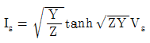
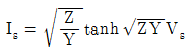
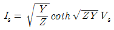
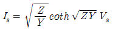
(정답률: 18%)
24. 지락고장 시 이상전압의 발생 우려가 거의 없는 접지방식은?
- 비접지방식
- 직접접지방식
- 저항접지방식
- 소호리액터접지방식
(정답률: 23%)
25. 송전계통의 중성점을 직접 접지하는 방식의 특징이 아닌 것은?
- 계통의 과도 안정도가 좋아짐
- 대지 전위상승을 억제하여 전선로 및 기기 절연 레벨의 경감
- 지락고장 시 보호 계전기의 동작을 신속 정확하게 함
- 소호 리액터 방식에서는 1선 지락시 아크를 신속히 소멸
(정답률: 22%)
26. 차단기의 동작 책무에 의한 차단기를 재투입할 경우 전자 또는 기계력에 의한 반발력을 견뎌야 한다. 차단기의 정격투입전류는 정격차단전류의 몇 배 이상을 선정하여야 하는가?
- 1.2
- 1.5
- 2.2
- 2.5
(정답률: 12%)
27. 배전선로에서 전압강하를 보상하기 위하여 일반적으로 정격1차 전압의 10% 범위 내에 서 전압조정을 하고 있다. 전압조정 방법으로 틀린 것은?
- 배전선로에서 모선을 일괄 조정
- 배전용변압기를 V결선하여 조정
- 배전용변압기에서 주상변압기의 탭 조정
- 배전용변전소의 주변압기 부하 시 탭 조정
(정답률: 27%)
28. 가공선 계통을 지중선 계통과 비교할 때 인덕턴스 및 정전용량은 어떠한가?
- 인덕턴스, 정전용량이 모두 작다.
- 인덕턴스, 정전용량이 모두 크다.
- 인덕턴스는 크고, 정전용량은 작다.
- 인덕턴스는 작고, 정전용량은 크다.
(정답률: 30%)
29. 그림과 같은 단상 2선식 배선에서 급전점의 전압이 220V 일 때 A점과 B점의 전압(V) 은 얼마인가? (단, 저항값은 1선당 저항값이다.)
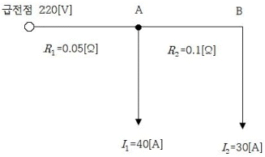
- 211, 2⑤
- 215, 209
- 213, 207
- 209, 203
(정답률: 25%)
30. 특유속도가 가장 낮은 수차는?
- 펠톤수차
- 사류수차
- 프로펠라수차
- 프란시스수차
(정답률: 25%)
31. 전력선과 통신선간의 상호 정전용량 및 상호 인덕턴스에 의해 발생되는 유도장해로 옳은 것은?
- 정전유도장해 및 전자유도장해
- 전력유도장해 및 전자유도장해
- 정전유도장해 및 고조파유도장해
- 전자유도장해 및 고조파유도장해
(정답률: 36%)
32. 통신선과 병행인 60Hz의 3상 1회선 송전선에서 1선 지락으로 110A의 영상 전류가 흐 르고 있을 때 통신선에 유기되는 전자 유도전압은 약 몇 V 인가? (단, 영상전류는 송전선 전체에 걸쳐 같은 크기이고, 통신선과 송전선의 상호 인덕턴스는 0.⑤mH/km, 양 선로의 평 행 길이는 55km이다.)
- 252
- 293
- 342
- 365
(정답률: 24%)
33. 출력 185000kW의 화력발전소에서 매시간 140t의 석탄을 사용한다고 한다. 이 발전소 의 열효율은 약 몇 % 인가? (단, 사용하는 석탄의 발열량은 4000kcal/kg이다.)
- 28.4
- 30.7
- 32.6
- 34.5
(정답률: 23%)
34. 저압 뱅킹 배전방식에서 캐스케이딩이란?
- 변압기의 전압 배분을 자동으로 하는 것
- 수전단 전압이 송전단 전압보다 높아지는 현상
- 저압선에 고장이 생기면 건전한 변압기의 일부 또는 전부가 연쇄적으로 차단되는 현상
- 전압 동요가 일어나면 연쇄적으로 파동치는 현상
(정답률: 35%)
35. 화력발전소에서 열 사이클의 효율 향상을 위한 방법이 아닌 것은?
- 조속기의 설치
- 재생, 재열사이클의 채용
- 절탄기, 공기예열기의 설치
- 고압, 고온증기의 채용과 과열기의 설치
(정답률: 33%)
36. 진공차단기의 특징이 아닌 것은?
- 전류재단현상이 있어 개폐서지가 작다.
- 접점소모가 적어 수명이 길다.
- 화재 및 폭발의 위험이 없다.
- 고속도차단 성능이 우수하다.
(정답률: 28%)
37. 수용설비 각각의 최대수용전력의 합(kw)을 합성최대 수용전력(kw)으로 나눈 값은?
- 부하율
- 수용률
- 부등률
- 역률
(정답률: 30%)
38. 가공송전선로에서 총 단면적이 같은 경우 단도체와 비교하여 복도체의 장점이 아닌 것은?
- 안정도를 증대시킬 수 있다.
- 공사비가 저렴하고 시공이 간편하다.
- 전선표면 전위경도 감소시켜 코로나 임계전압이 높아진다.
- 선로의 인덕턴스가 감소되고 정전용량이 증가해서 송전용량이 증대된다.
(정답률: 31%)
39. 단로기의 사용 목적은?
- 부하의 차단
- 과전류의 차단
- 단락사고의 차단
- 무부하 선로의 개폐
(정답률: 34%)
40. 동작 시간에 따른 보호 계전기의 분류와 설명이 옳지 않은 것은?
- 순한시 계전기는 설정된 최소작동전류 이상의 전류가 흐르면 즉시 작동하는 것으로 한도를 넘은 양과는 관계가 없다.
- 반한시 계전기는 작동시간이 전류값의 크기에 따라 변하는 것으로 전류값이 클수록 느리게 동작하고 반대로 전류값이 작아질수록 빠르게 작동하는 계전기이다.
- 정한시 계전기는 설정된 값 이상의 전류가 흘렀을 때 작동 전류의 크기와는 관계없이 항상 일정한 시간 후에 작동하는 계전기이다.
- 반한시성 정한시 계전기는 어느 전류값까지는 반한시성이지만 그 이상이 되면 정한시로 작동하는 계전기이다.
(정답률: 28%)
3과목: 전기기기
41. 역률 1에서 출력 2kW와 8kW에서 효율이 96%가 되는 단상 변압기가 있다. 출력 8kW, 역율 1에 있어서의 동손(Pc), 철손(Pi)은 약 몇 W 인가?
- Pc = 266, Pi = 67
- Pc = 276, Pi = 68
- Pc = 286, Pi = 69
- Pc = 296, Pi = 70
(정답률: 18%)
42. 수은 정류기의 역호가 발생하는 가장 큰 원인은?
- 전원전압의 상승
- 내부저항의 저하
- 전원주파수의 저하
- 전압과 전류의 과대
(정답률: 21%)
43. 교류 발전기의 동기 임피던스는 철심이 포화하면 어떻게 되는가?
- 증가한다.
- 관계없다.
- 감소한다.
- 증가, 감소가 불명확하다.
(정답률: 19%)
44. 60Hz용에서 3600rpm의 고속기이므로 원심력을 작게 하기 위하여 회전자 직경을 작게 하고 축 방향으로 길게 한 원통형 회전자를 사용한 발전기는?
- 엔진 발전기
- 디젤 발전기
- 풍력 터빈 발전기
- 증기(가스) 터빈 발전기
(정답률: 25%)
45. 직류 직권전동기가 있다. 공급 전압이 100V, 전기자 전류가 4A일 때 회전속도는 1500rpm이다. 여기서 공급 전압을 80V로 낮추었을 때 같은 전기자전류에 대하여 회전속도 는 얼마로 되는가? (단, 전기자 권선 및 계자 권선의 전저항은 0.5Ω이다.)
- 986
- 1042
- 1125
- 1194
(정답률: 23%)
46. 3300V, 60Hz용 변압기의 와류손이 360W이다. 이 변압기를 2750V, 50Hz에서 사용할 때 변압기의 와류손은 약 몇 W가 되는가?
- 200
- 225
- 250
- 275
(정답률: 28%)
47. 직류 분권전동기의 전체 도체수는 100, 단중중권이며 자극수는 4, 자속수는 극당 0.628Wb이다. 부하를 걸어 전기자에 5A가 흐르고 있을 때의 토크는 약 몇 N∙m 인가?
- 12.5
- 25
- 50
- 100
(정답률: 21%)
48. 직류발전기에서 자속을 끊어 기전력을 유기시키는 부분을 무엇이라 하는가?
- 계자
- 계철
- 전기자
- 정류자
(정답률: 24%)
49. 두 동기발전기의 유도기전력이 1000V, 위상차 90°, 동기리액턴스 100Ω 일 경우 유효 순환전류는 약 몇 A 인가?
- 5
- 7
- 10
- 20
(정답률: 11%)
50. 7.5kW, 6극, 200V 용 3상 유도전동기가 있다. 정격 전압으로 기동하면 기동전류는 정 격전류의 615%이고, 기동 토크는 전부하 토크의 225%이다. 지금 기동 토크를 전부하 토크 의 1.5배로 하기 위하여 기동전압을 약 몇 V로 하면 되는가?
- 133
- 143
- 153
- 163
(정답률: 13%)
51. 3상 동기 발전기의 매극 매상의 슬롯수가 3일 때 분포권 계수는?
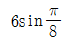
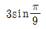
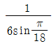
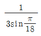
(정답률: 32%)
52. 변압기의 부하가 증가할 때의 현상으로서 틀린 것은?
- 동손이 증가한다.
- 온도가 상승한다.
- 철손이 증가한다.
- 여자전류는 변함없다.
(정답률: 22%)
53. 회전계자형 동기발전기에 대한 설명으로 틀린 것은?
- 대용량의 경우에도 전류는 작다.
- 전기자권선은 전압이 높고 결선이 복잡하다.
- 계자극은 기계적으로 튼튼하게 만들기 쉽다.
- 계자회로는 직류의 저압회로이며 소요전력도 적다.
(정답률: 21%)
54. 정격속도 1732rpm의 직류직권전동기의 부하토크가 3/4 으로 되었을 때의 속도는 약 몇 rpm인가? (단, 자기포화는 무시한다.)
- 1155
- 1550
- 1750
- 2000
(정답률: 20%)
55. 보호계전기 구성요소의 기본원리에 속하지 않는 것은?
- 광전관
- 전자 흡인
- 전자 유도
- 정지형 스위칭 회로
(정답률: 26%)
56. 단상 직권 정류자 전동기의 회전 속도를 높이는 이유는?
- 역률을 개선한다.
- 토크를 증가시킨다.
- 리액턴스 강하를 크게 한다.
- 전자기에 유도되는 역기전력을 적게 한다.
(정답률: 20%)
57. 그림과 같은 정류회로에서 전류계의 지시 값은 약 몇 mA 인가? (단, 전류계는 가동코일형이고 정류기 저항은 무시한다.)
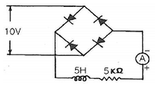
- 1.8
- 4.5
- 6.4
- 9.0
(정답률: 20%)
58. 농형유도전동기의 결점인 것은?
- 기동 kVA가 크고 기동토크가 크다.
- 기동 kVA가 작고 기동토크가 적다.
- 기동 kVA가 작고 기동토크가 크다.
- 기동 kVA가 크고 기동토크가 적다.
(정답률: 22%)
59. 교류분권 정류자 전동기는 어느 때에 가장 적당한 특성을 갖고 있는가?
- 부하토크에 관계없이 완전 일정속도를 요하는 경우
- 속도의 연속 가감과 정속도 운전을 아울러 요하는 경우
- 무부하와 전 부하의 속도변화가 적고 거의 일정속도를 요하는 경우
- 속도를 여러 단으로 변화시킬 수 있고 각단에서 정속도 운전을 요하는 경우
(정답률: 14%)
60. 3상 유도전동기의 슬립이 s < 0 인 경우를 설명한 것으로 틀린 것은?
- 동기속도 이상이다.
- 유도발전기로 사용된다.
- 속도를 증가시키면 츨력이 증가한다.
- 유도전동기 단독으로 동작이 가능하다.
(정답률: 24%)
4과목: 회로이론 및 제어공학
61. 불평형 3상전류 Ia=25+j4A, Ib=-18-j16A,Ic=7+j15A 일 때의 영상전류는 ?
- 2.67+j
- 2.67+j2
- 4.67+j
- 4.67+j2
(정답률: 28%)
62. R=10Ω, C=50㎌의 직렬회로에 200V 의 직류를 가할 때 완충된 전기량 Q(C)는?
- 10
- 0.1
- 0.01
- 0.001
(정답률: 21%)
63. 코일에 최대값이 Em= 200V, 주파수 f=50㎐인 정현파 전압을 가했더니 전류의 최대값 Im= 10A이었다. 인덕턴스 L은 약 몇 mH 인가? (단, 코일의 내부저항은 5Ω이다.)
- 62
- 52
- 42
- 32
(정답률: 17%)
64. 그림과 같은 4단자 회로의 영상 임피던스 Z02는 몇 Ω 인가?
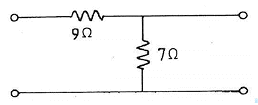
- 14
- 12
- 21/4
- 5/3
(정답률: 20%)
65. 라플라스 변환함수
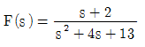
에 대한 역변환 함수 f(t)는?- e-3t cos 2t
- e3t cos 2t
- e-2t cos 3t
- e2t cos 3t
(정답률: 29%)
66. 분포정수 회로가 무왜선로로 되는 조건은? (단, 선로의 단위 길이당 저항은 R, 인덕턴 스는 L, 정전용량은 C, 누설 콘덕턴스는 G이다.)
- RL=CG
- RC=LG
- R=L/C
- R=√LC
(정답률: 31%)
67. RC 직렬회로 직류전압 V(V)가 인가될 때, 전류 I(t)에 대한 시간영역방정식이
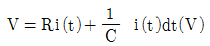
로 주어져 있다. 전류 I(t)의 라플라스 변환I(s) 는? (단, C에는 초기전하가 없음)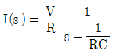
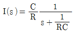
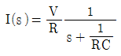
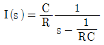
(정답률: 21%)
68. 다음의 비정현파 전압, 전류로부터 평균전력 P(W)와 피상전력 P(VA)는?
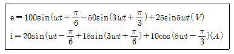
- P=283.5, Pa=1541
- P=385.2, Pa=2021
- P=404.9, Pa=3284
- P=491.3, Pa=4141
(정답률: 20%)
69. 회로에서 정전용량 C는 초기전하가 없었다. t=0에서 스위치(K)를 닫았을 때t=0+에 서의 I(t)값은?
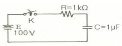
- 0.1A
- 0.2A
- 0.4A
- 1.0A
(정답률: 27%)
70. 6상 성형 상전압이 100V일 때 선간전압은 몇 V 인가?
- 200
- 173
- 141
- 100
(정답률: 23%)
71. 샘플러의 주기를 T라 할 때 s평면상의 모든 점은 식 z=es 에 의하여 z평면상에 사상 된다. s평면의 우반 평면상의 모든 점은 z평면상 단위원의 어느 부분으로 사상되는가?
- 내점
- 외점
- z평면 전체
- 원주상의 점
(정답률: 26%)
72. 2차 계의 주파수 응답과 시간 응답에 대한 특성을 서술하는 내용 중 틀린 것은?
- 안정된 영역에서 대역폭은 공진주파수에 반비례한다.
- 안정된 영역에서 더 높은 대역폭은 더 큰 공진 첨두값에 대응한다.
- 최대 오버슈트와 공진 첨두값은 제동비만의 함수로 나타낼 수 있다.
- 공진주파수가 일정 시 제동비가 증가하면 상승시간은 증가하고, 대역폭은 감소한다.
(정답률: 12%)
73. PD 제어동작은 프로세스 제어계의 과도 특성 개선에 쓰인다. 이것에 대응하는 보상 요 소는?
- 지상 보상 요소
- 진상 보상 요소
- 동상 보상 요소
- 진지상 보상 요소
(정답률: 25%)
74. 그림과 같은 계전기 접점회로의 논리식은?
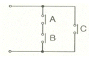
- ABC
- AB+C
- A+B+C
- (A+B)C
(정답률: 32%)
75. 보드선도의 안정판정의 설명 중 옳은 것은?
- 위상곡선이 -180°점에서 이득 값이 양이다.
- 이득여유는 음의 값, 위상여유는 양의 값이다.
- 이득곡선의 0㏈ 점에서 위상차가 180㏈°보다 크다.
- 이득(0㏈)축과 위상(-180°)축을 일치시킬 때 위상 곡선이 위에 있다.
(정답률: 18%)
76. 단위피드백(feed back) 제어계의 개루프 전달함수의 벡터궤적이다. 이 중 안정한 궤적 은?
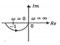
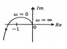
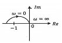
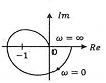
(정답률: 17%)
77. 미분방정식
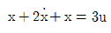
로표시되는 계의 시스템행렬과 입력행렬은?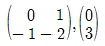
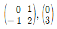
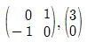
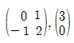
(정답률: 29%)
78. 특성방정식의 s4+7s3+17s2+17s+6=0특성근 중에는 양의 실수부를 갖는 근이 몇 개인가?
- 1
- 2
- 3
- 무근
(정답률: 20%)
79. 근궤적은 무엇에 대하여 대칭인가?
- 극점
- 원점
- 허수축
- 실수축
(정답률: 26%)
80. 다음 블록선도의 전달함수(C/A)는?
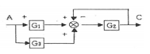
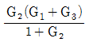
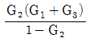
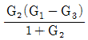
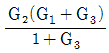
(정답률: 28%)
5과목: 전기설비기술기준 및 판단기준
81. 전선의 접속법으로 틀린 것은?
- 나전선 상호간의 접속인 경우에는 전선의 세기를 20% 이상 감소시키지 않아야 한다.
- 두개 이상의 전선을 병렬로 사용할 때 각 전선의 굵기를 35mm2 이상의 동선을 사용한다.
- 알루미늄과 동을 사용하는 전선을 접속하는 경우에는 접속 부분에 전기적 부식이 생기지 않아야 한다.
- 절연전선 상호간을 접속하는 경우에는 접속부분을 절연효력이 있는 것으로 충분히 피복 하여야 한다.
(정답률: 34%)
82. 고압 가공전선로에서 선로의 길이가 몇 km 이상일 때 휴대용 또는 이동용 전화기에 의 해 통화 할 수 있는 시설을 설치하여야 하는가?(오류 신고가 접수된 문제입니다. 반드시 정답과 해설을 확인하시기 바랍니다.)
- 5
- 10
- 25
- 50
(정답률: 18%)
83. 사용전압이 100kV 이상의 변압기를 설치하는 곳에는 절연유의 구외유출 및 지하침투를 방지하기 위하여 다음 각 호에 의하여 절연유 유출 방지 설비를 하여야 한다. ㉠, ㉡ 에 들 어갈 내용으로 옳은 것은?(오류 신고가 접수된 문제입니다. 반드시 정답과 해설을 확인하시기 바랍니다.)
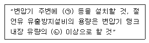
- ㉠ 측벽, ㉡ 20%
- ㉠ 집유조, ㉡ 50%
- ㉠ 소화기, ㉡ 40%
- ㉠ 집유조, ㉡ 40%
(정답률: 24%)
84. 사용전압이 몇 V를 초과하는 특고압 가공전선과 가공 약전류 전선 등은 동일 지지물에 시설하여서는 아니 되는가?
- 6600
- 22900
- 30000
- 35000
(정답률: 22%)
85. 고압 가공전선으로 사용한 경동선은 안전율이 얼마 이상인 이도로 시설하여야 하는가?
- 2.0
- 2.2
- 2.5
- 3.0
(정답률: 30%)
86. 주상변압기 전로의 절연내력을 시험할 때 최대 사용전압이 23000V인 권선으로서 중성 점접지식 전로(중성선을 가지는 것으로서 그 중성선에 다중접지를 한 것)에 접속하는 것의 시험전압은?
- 16560
- 21160
- 25300
- 28750
(정답률: 32%)
87. 특고압 가공전선이 건조물과 제1차 접근 상태로 시설되는 경우에 특고압 가공전선로는 어떤 보안공사를 하여야 하는가?
- 고압 보안공사
- 제1종 특고압 보안공사
- 제2종 특고압 보안공사
- 제3종 특고압 보안공사
(정답률: 21%)
88. 철도∙궤도 또는 자동차도 전용터널 안 전선로에 경동선을 저압 및 고압 전선으로 사용 하는 경우 경동선의 지름은 몇 ㎜ 인가?
- 저압：2.6㎜ 이상, 고압：3.2㎜ 이상
- 저압：2.6㎜ 이상, 고압：4㎜ 이상
- 저압：3.2㎜ 이상, 고압：4㎜ 이상
- 저압：3.2㎜ 이상, 고압：4.5㎜ 이상
(정답률: 29%)
89. 특고압 가공전선로의 지지물로 사용하는 철탑은 상시 상정하중 또는 이상 시 상정하중 의 몇 배의 하중 중 큰 것에 견뎌야 하는가? (단, 완금류는 제외한다.)
- 1/2
- 2/3
- 1
- 3/2
(정답률: 17%)
90. 특고압 가공전선로에 케이블을 사용하여 시설하는 경우 조가용선 및 케이블의 피복에 사용하는 금속체에는 제 몇 종 접지공사를 하여야 하는가?(오류 신고가 접수된 문제입니다. 반드시 정답과 해설을 확인하시기 바랍니다.)
- 제1종 접지공사
- 제2종 접지공사
- 제3종 접지공사
- 특별 제3종 접지공사
(정답률: 24%)
91. 출퇴표시등 회로에 전기를 공급하기 위한 변압기는 1차측 전로의 대지전압이 300V 이 하, 2차측 전로의 사용전압은 몇 V 이하인 절연변압기이어야 하는가?
- 60
- 80
- 100
- 150
(정답률: 29%)
92. 라이팅 덕트 공사에 의한 저압 옥내배선에서 덕트의 지지점간의 거리는 몇 m 이하인 가?
- 2
- 3
- 4
- 5
(정답률: 21%)
93. 특고압 가공전선로의 지지물에 시설하는 통신선 또는 이에 직접 접속하는 통신선과 삭도 또는 다른 가공약전류 전선 등 사이의 이격거리는 몇 cm 인가? (단, 통신선은 케이블이 다.)
- 30
- 40
- 50
- 60
(정답률: 10%)
94. 피뢰기 설치기준으로 틀린 것은?
- 가공전선로와 특고압 전선로가 접속되는 곳
- 고압 및 특고압 가공전선로로부터 공급 받는 수용장소의 인입구
- 발전소∙변전소 또는 이에 준하는 장소의 가공전선의 인입구 및 인출구
- 가공 전선로에 접속한 1차측 전압이 35㎸ 이하인 배전용 변압기의 고압측 및 특고압측
(정답률: 21%)
95. 정류기의 전로로 대지전압이 220V 라고 한다. 이 전로의 절연저항 값으로 옳은 것은?(오류 신고가 접수된 문제입니다. 반드시 정답과 해설을 확인하시기 바랍니다.)
- 0.1㏁ 미만으로 유지하여야 한다.
- 0.2㏁ 미만으로 유지하여야 한다.
- 0.1㏁ 이상으로 유지하여야 한다.
- 0.2㏁ 이상으로 유지하여야 한다.
(정답률: 17%)
96. 길이 16m, 설계하중 8.2kN 의 철근 콘크리트주를 지반이 튼튼한 곳에 시설하는 경우 지지물 기초의 안전율과 무관하려면 땅에 묻는 깊이를 몇 m 이상으로 하여야 하는가?
- 2.0
- 2.5
- 2,8
- 3.2
(정답률: 31%)
97. 고압 보안공사를 할 때 지지물로 B종 철근 콘크리트주를 사용하면 그 경간은 몇 m 이 하인가?
- 75
- 100
- 150
- 200
(정답률: 25%)
98. 저압 옥내배선용 전선의 굵기는 미네럴인슈레이션 케이블을 사용할 때 몇 mm2 이상의 것 을 사용하여야 하는가?(오류 신고가 접수된 문제입니다. 반드시 정답과 해설을 확인하시기 바랍니다.)
- 0.75
- 1
- 1.5
- 2.5
(정답률: 23%)
99. 애자사용공사에 의한 저압 옥내배선을 시설할 때 사용전압이 400V 이상인 경우 전선과 조영재와의 이격거리는 몇 cm 이상이어야 하는가? (단, 건조한 장소임)
- 2.5
- 5
- 7.5
- 10
(정답률: 24%)
100. 건조한 곳에 시설하고 또한 내부를 건조한 상태로 사용하는 진열장 안의 저압 옥내배 선 공사에 사용할 수 있는 전압은 몇 V 미만인가?
- 110
- 220
- 400
- 380
(정답률: 30%)